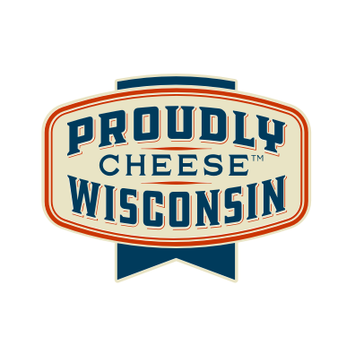

The Best Cheese
Artisanal cheese for everyone to enjoy.
About the Wisconsin Cheese Shop Site
Created as a Front End Concept by Christopher Stull
Designed to demonstrate the following skills:
- Front End Web Development
- HTML
- CSS
- JavaScript
- My Wisconsin Roots
- An Unhealthy obsession with cheese